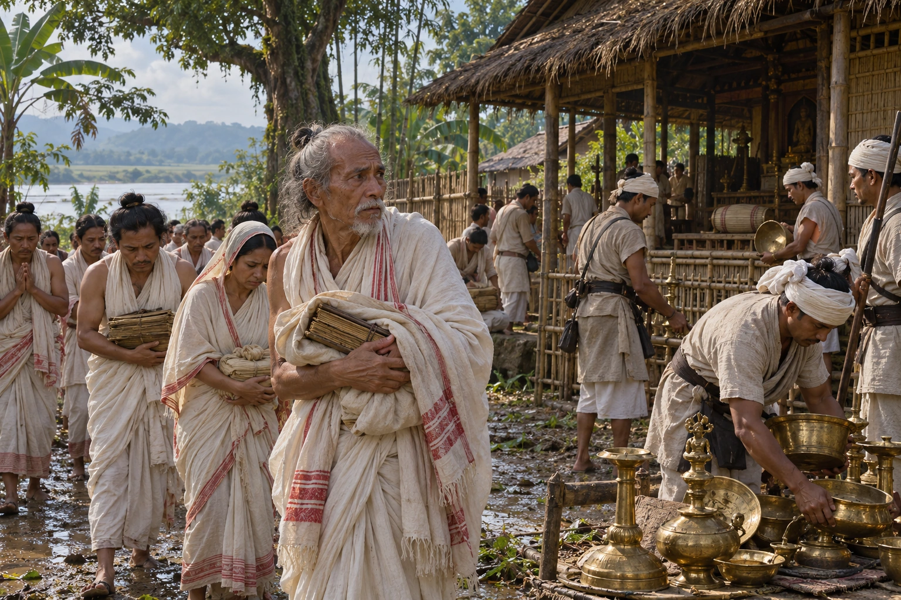

Gadadhar Singha's Persecution of the Satras
c. 1690s · The Tungkhungia kings

Late in his reign Gadadhar Singha turns on the Vaishnava satras. The Dakhinpat gosain is mutilated and his idols melted down, the Auniati head flees, and Mayamara disciples suffer most. The grievance feeds the later Moamoria rebellion.
Motives (personal grudge or politico-economic) are debated. Confiscation and displacement are shown without graphic violence. Gadadhar is absent; motives remain debated.
People: Gadadhar Singha (Supaatphaa)
Open this scene in the interactive archive · Follow this event on MAP